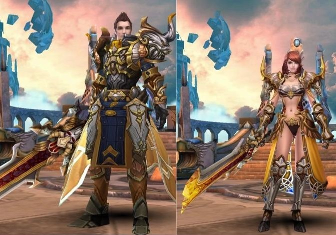
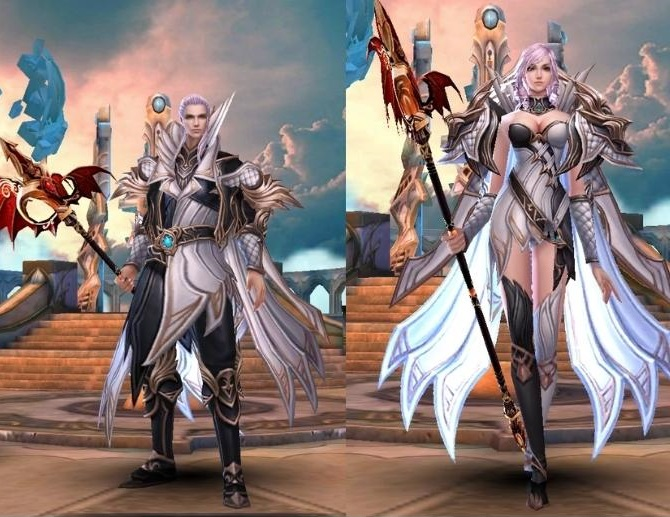
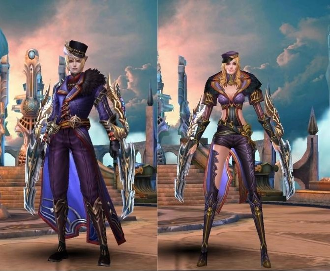

Classes
| Imagens | Nome | Funcionalidade |
|---|---|---|
|  | Guerreiro |
A classe guerreira , já diz tudo pelo próprio nome. Um verdadeiro duelista, como muitos buffs que causam dano aumentado. Com isso, podem ser muito perigosos, após usarem seus combos cheios de controle e explosão. |
|  | Invocador |
Especialista em atacar de longe, o invocador pode chamar criaturas que lhe ajudam a combater os demônios. Usando poderosos ataques a distância e com muito DPS, ele pode ser muito letal. Porém é frágil, em lutas corpo a corpo. |
|  | Assassino |
Assassino é uma classe especialista em aplicar dano, juntando movimentos agéis e suas garras afiadas, pode causar muita dor em seus inimigos. Uma vantagem , é que ao usar sua ultimate , ele ganha 80% de imunidade a qualquer tipo de dano recebido. |